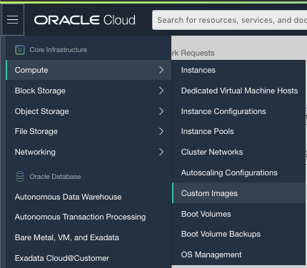

Importing an image
Import Oracle Public Image
1 Obtain link to the public image@
https://objectstorage.us-ashburn-1.oraclecloud.com/p/mGt9IY58nb22j3LkcPvoX0Uw_WJFj9dnAOQTISsXqO8/n/idqvhb5g0xic/b/bucket-20200414-1330/o/exported-image-20200721-1411
Note
this link expires on Dec. 31, 2020
2 Import this image into your custom images@
From the Oracle Cloud menu, navigate to Compute -> Custom Images

Choose Import Image
You should see a screen look like this

Press Import Image to continue. The import process will take few minutes.
3 Create Gateway off the image@
Once the image is imported, it will appear under your Custom Images page. Click on the image you just import.
You can now click on Create Instance button to create your VM.
4 Login to the VM@
To login to the VM, you will need to use the accout name "ocp".
You can verify ssh access to the VM by using a ssh enabled terminal:
> ssh opc@[ip_address_of_the_vm]
Once you are able to login, you can follow the registration process to register this VM to the NetFoundry network.